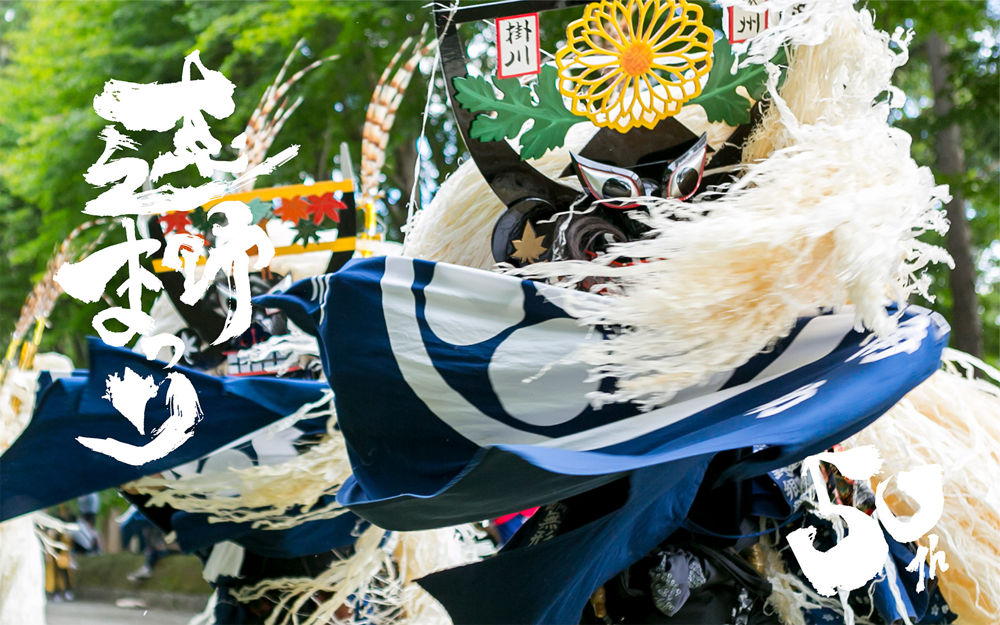

遠野まつり

遠野まつりでは毎年60以上の団体が集い、自然と人との密接な関わりを表現
する「しし踊り」や、五穀豊穣を祈る「田植踊」など、遠野の歴史ある芸能の
数々が披露されます。他にも「南部ばやし」、「さんさ踊り」、「神楽」など
が色鮮やかな衣装を纏って踊られ、神輿が繰り出し、遠野郷八幡宮境内の馬場
では流鏑馬が奉納され、その賑わいと華やかさはまさに「芸術の祭典」です。
観光情報
ジャンル
行事
所在地
遠野市遠野駅周辺・遠野郷八幡宮
電話番号
0198-62-2111
営業日
毎年9月第3土・日曜日
[アクセス経路]
東北自動車道 浦和IC→盛岡IC 6時間30分
八戸自動車道 八戸IC→盛岡IC 1時間30分
秋田自動車道 秋田IC→北上江釣子IC 1時間30分